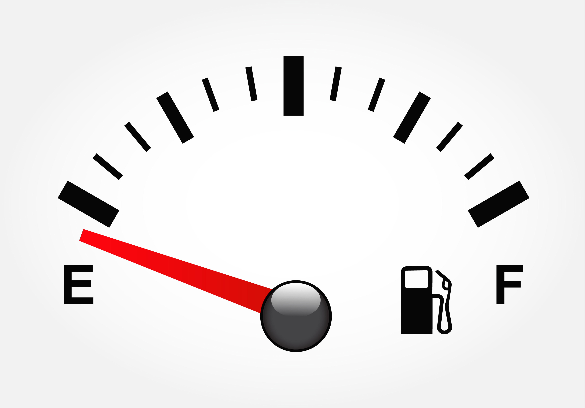

{% if user_facing_lists %}
<strong>Name, Resource id, fullUrl:</strong>
<form  action="/fetch-patientlist" method="post" name="get-list">
{% for i in user_facing_lists | sort(attribute='resource.name') %}
<input type="radio" name="get-list" id="{{ i.fullUrl }}" value="{{ i.fullUrl }}" {% if loop.index == 1 %}checked{% endif %}/>
<label for="{{ i.fullUrl }}">{{loop.index}}) {{ i.resource.name }}</label><br>
{% endfor %}
### Step 2: Fetch User-Facing Patient List
<input type="submit" class="btn btn-primary btn-lg" role="button" value="CLICK HERE to Fetch User Facing lists"></input><br>
</form>

{% else %}

<p><strong>
No User Facing Lists Returned for these parameters
</strong>
</p>
{% endif %}
